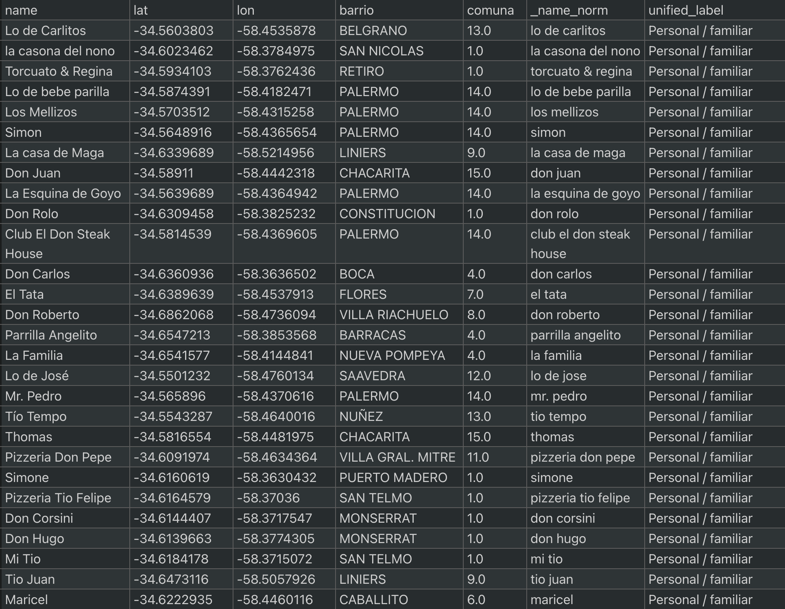
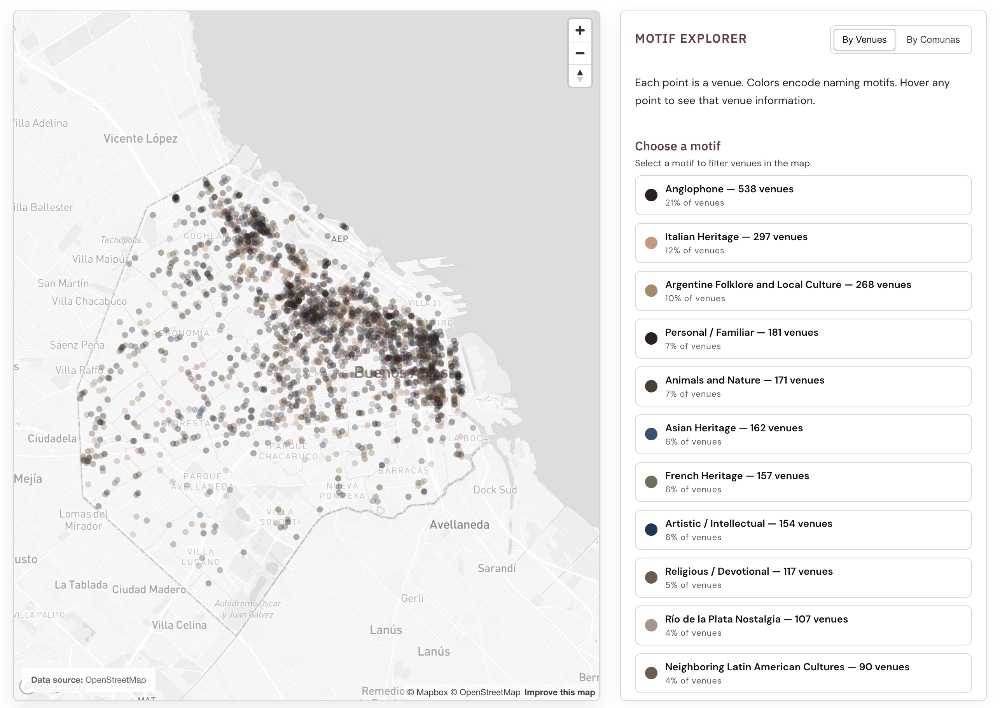
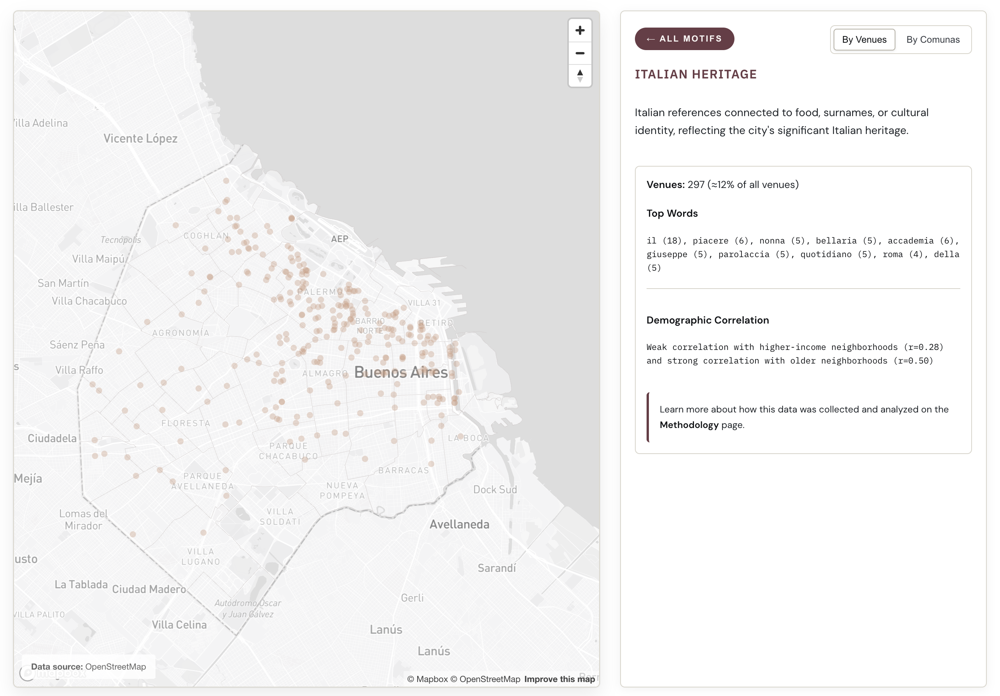

A city’s identity, written in its storefronts. Using OpenStreetMap data and textual analysis, this project maps what the names of Buenos Aires cafés, bars, libraries, and other key local venues might reveal about the city's identity.
See live site ↗The names of a city's venues —cafés, restaurants, bars, libraries, and more— form a vernacular archive: a record of cultural influences and heritage written across the city's storefronts. This project asks whether those patterns can be systematically mapped, and whether they correlate with the city's socioeconomic geography.
Venue data was collected from OpenStreetMap via the Overpass API and filtered to the administrative boundary of Buenos Aires. Names were classified into cultural motifs through a three-stage pipeline: (1) regex-based rules for each motif as a first pass to catch straightforward cases; (2) LLM classification via Ollama (Mistral 7B Instruct); and (3) manual labeling and reviewing.
Each venue was spatially joined with neighborhood and district (comuna) boundaries. Motif distributions were aggregated at the district level, and Pearson correlations were computed against income and average age.

The project offers two complementary views of the data. A point map shows each venue as a dot colored by its cultural motif, revealing fine-grained spatial patterns across the city. A choropleth aggregates these patterns, showing how motifs concentrate at the district level.
Several relationships emerge. For example, Anglophone and French-named venues correlate with wealthier, older neighborhoods, while names tied to Argentine folklore and local culture show the inverse, concentrating in lower-income, younger areas. These and other patterns suggest that naming is not arbitrary, and invite further questions about what drives these distributions, from heritage and aspiration to audience-signaling.

